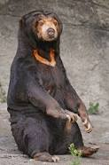
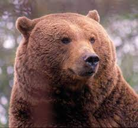
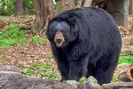

Osos
Caracteristicas
Los osos se caracterizan por su cabeza de gran tamaño, orejas pequeñas,
redondeadas y erectas, ojos pequeños, un cuerpo pesado, robusto y una
cola corta. Las patas son cortas y poderosas, con cinco dedos
provistos de uñas fuertes y recurvadas garras.
Tipos de osos
- Panda gigante
- Oso malayo 
- Oso negro de Asia
- Oso bezudo
- Oso andino
- Oso polar
- Oso pardo 
- Oso negro de América 